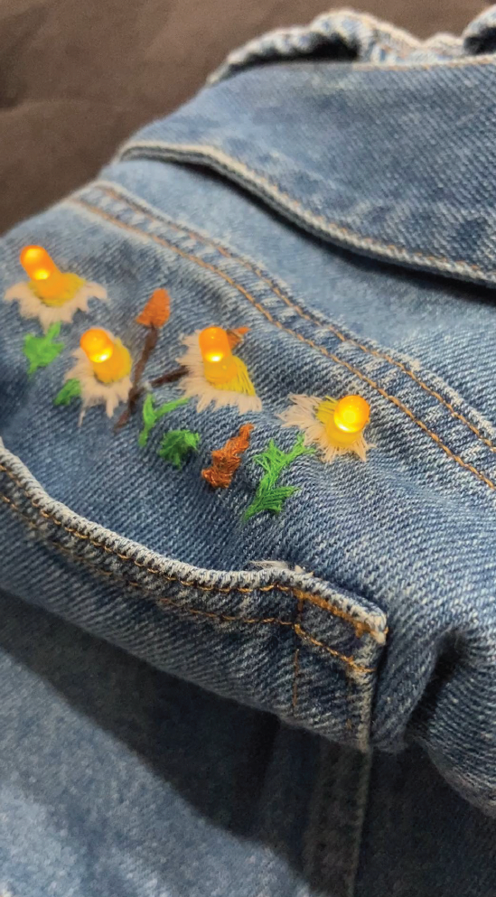

Connect: Circuits and Interactions
Design Statement
This project explored the integration of conductive materials and circuits into real-world applications. Through hands-on experimentation, I developed a deeper understanding of circuits and applied them to create a wearable design that pushes beyond the concepts learned in weekly activities. Throughout the design process, key principles guided my work. Functionality ensured that the circuits were integrated and performed reliably. Balance contributed to both the visual and structural stability of our designs, while emphasis and hierarchy helped highlight important interactive elements. Lastly, unity and harmony brought all elements together into a cohesive and visually compelling outcome.
Key Features
- Interactivity – circuits respond seamlessly to user interaction.
- Material Integration – conductive thread and fabric were embedded so subtly that they become invisible within the design.
- Embroidery – precise stitching elevated both the craftsmanship and the visual appeal, reinforcing the design without revealing the circuitry.